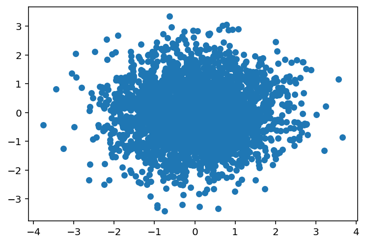
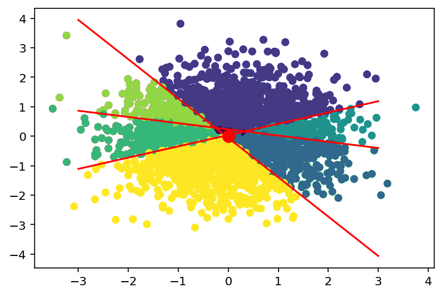

import numpy as np
import matplotlib.pyplot as plt
import pandas as pd
%matplotlib inline
%config InlineBackend.figure_format = 'retina'KNN LSH
KNN LSH
# Generate some data
X = np.random.randn(3000, 2)
# Plot the data
plt.scatter(X[:, 0], X[:, 1], s=30)<matplotlib.collections.PathCollection at 0x7f321da32c10>
# Naive KNN
def naive_knn_for_loop(X, x_test, k=3):
dists = np.zeros(X.shape[0])
for i in range(X.shape[0]): # N iterations (N = number of data points)
dists[i] = np.dot(X[i] - x_test, X[i] - x_test) # Time complexity: O(D)
# Time complexity to create the distance array: O(N*D)
# Now, we need to find the k smallest distances
return np.argpartition(dists, k)[:k] # Time complexity: O(Nk) or O(N) depending on the implementation
naive_knn_for_loop(X, np.array([0, 0]))array([2529, 958, 804])X[naive_knn_for_loop(X, np.array([0, 0]))]array([[-0.02103967, 0.02703294],
[ 0.0092843 , 0.02548091],
[-0.03094897, 0.01750535]])%timeit naive_knn_for_loop(X, np.array([0, 0]))12.3 ms ± 47.7 µs per loop (mean ± std. dev. of 7 runs, 100 loops each)# Implement using numpy
def naive_knn_numpy(X, x_test, k=3):
dists = np.sum((X - x_test)**2, axis=1)
#return np.partition(dists, k)[:k]
sorted_dists = np.argsort(dists)
return sorted_dists[:k]naive_knn_numpy(X, np.array([0, 0]))array([ 958, 2529, 804])%timeit naive_knn_numpy(X, np.array([0, 0]))240 µs ± 631 ns per loop (mean ± std. dev. of 7 runs, 1,000 loops each)# Implement using numpy
def naive_knn_numpy(X, x_test, k=3):
dists = np.sum((X - x_test)**2, axis=1)
return np.argpartition(dists, k)[:k]
#sorted_dists = np.argsort(dists)
#return sorted_dists[:k]%timeit naive_knn_numpy(X, np.array([0, 0]))84.6 µs ± 607 ns per loop (mean ± std. dev. of 7 runs, 10,000 loops each)# Show LSH implementation step by step
# Creating a random separating hyperplane
w = np.random.randn(2)
b = np.random.randn(1)/4.0
# Plot the separating hyperplane
x = np.linspace(-3, 3, 100)
y = -(w[0] * x + b) / w[1]
plt.scatter(X[:, 0], X[:, 1], s=30)
plt.plot(x, y, 'r', linewidth=3)
# Color the points based on which side of the hyperplane they are on
colors = X[:, 0]*w[0] + X[:, 1]*w[1] + b > 0
plt.scatter(X[:, 0], X[:, 1], s=30, c=colors)<matplotlib.collections.PathCollection at 0x7f31106b4ac0>
# Create three random hyperplanes and color the points based on which side of the hyperplane they are on.
# there should be 2^3 = 8 different colors
# each separating hyperplane corresponds to a bit in the hash
hash = np.zeros((X.shape[0], 3)).astype(int)
ws = []
bs = []
# Cost for creating the hash table: O(N*H*D)
for H in range(3): # H = number of hyperplanes
w = np.random.randn(2)
b = np.random.randn(1)/4.0
ws.append(w)
bs.append(b)
hash[:, H] = X[:, 0]*w[0] + X[:, 1]*w[1] + b > 0 # D computations per iteration
# Convert the hash to a decimal number
hash_dec = np.sum(hash * 2**np.arange(3)[::-1], axis=1)
# Plot the hash
plt.scatter(X[:, 0], X[:, 1], s=30, c=hash)
# Plot the hash with the separating hyperplanes
plt.scatter(X[:, 0], X[:, 1], s=30, c=hash_dec)
for w, b in zip(ws, bs):
print(w, b)
x = np.linspace(-3, 3, 100)
y = -(w[0] * x + b) / w[1]
plt.plot(x, y, 'r')
# Mark the test point
x_test = np.array([0, 0])
plt.scatter(x_test[0], x_test[1], s=100, c='r')[-1.78798897 -1.3408181 ] [-0.08094113]
[ 0.9447324 -2.47059549] [0.09350769]
[0.20531227 0.97521902] [-0.22471283]<matplotlib.collections.PathCollection at 0x7f31105bf280>
df = pd.DataFrame(hash)
df.columns = ['h1', 'h2', 'h3']
df['hash_dec'] = hash_dec
df['x'] = X[:, 0]
df['y'] = X[:, 1]
df.head(10)| h1 | h2 | h3 | hash_dec | x | y | |
|---|---|---|---|---|---|---|
| 0 | 1 | 1 | 0 | 6 | -1.289013 | -0.497073 |
| 1 | 1 | 1 | 0 | 6 | 0.721631 | -1.923390 |
| 2 | 1 | 1 | 0 | 6 | 0.042595 | -0.177549 |
| 3 | 1 | 1 | 0 | 6 | 0.148706 | -0.452442 |
| 4 | 1 | 1 | 0 | 6 | -0.047372 | -0.431685 |
| 5 | 1 | 1 | 0 | 6 | -0.478764 | -0.304759 |
| 6 | 0 | 1 | 0 | 2 | 0.812057 | -0.574337 |
| 7 | 1 | 0 | 1 | 5 | -1.493164 | 1.209339 |
| 8 | 0 | 1 | 0 | 2 | 0.820065 | -0.575965 |
| 9 | 0 | 0 | 1 | 1 | 1.045276 | 1.143788 |
pd.DataFrame(hash).value_counts()0 1 2
1 1 0 846
0 0 1 827
1 0 491
1 0 0 346
1 243
0 1 1 210
0 0 37
dtype: int64# Predict the K nearest neighbors using LSH
# Compute the hash for the test point
x_test = np.array([0, 0])
hash_test = x_test[0]*ws[0][0] + x_test[1]*ws[0][1] + bs[0] > 0
#convert to decimal
hash_test_dec = np.sum(hash_test * 2**np.arange(3)[::-1])
hash_test_dec0# Find subset of points with the same hash
X_subset = X[hash_dec == hash_test_dec]
X_subset.shape(37, 2)# Now, we can use the naive KNN implementation to find the K nearest neighbors
ix = naive_knn_numpy(X_subset, x_test, k=3)
X_subset[ix]array([[-0.04090763, 0.07013394],
[-0.00419256, 0.08614131],
[-0.05284791, 0.06786371]])%timeit naive_knn_numpy(X_subset, x_test, k=3)10.5 µs ± 31.4 ns per loop (mean ± std. dev. of 7 runs, 100,000 loops each)# Using FAISS from Facebook
import faiss
# Create an index
index = faiss.IndexFlatL2(2) # build the index
# Add the data to the index
index.add(X.astype(np.float32)) # add vectors to the index# Search for the K nearest neighbors
D, I = index.search(x_test.astype(np.float32).reshape(1, -1), k=3) # actual searchDarray([[0.00073547, 0.00117345, 0.00126428]], dtype=float32)Iarray([[ 958, 2529, 804]])X[I[0]]array([[ 0.0092843 , 0.02548091],
[-0.02103967, 0.02703294],
[-0.03094897, 0.01750535]])%timeit index.search(x_test.astype(np.float32).reshape(1, -1), k=3)50.9 µs ± 212 ns per loop (mean ± std. dev. of 7 runs, 10,000 loops each)# Now, run on GPU
res = faiss.StandardGpuResources() # use a single GPU
# Create an index
index = faiss.IndexFlatL2(2) # build the index
gpu_index_flat = faiss.index_cpu_to_gpu(res, 0, index)
# Add the data to the index
gpu_index_flat.add(X.astype(np.float32)) # add vectors to the index%timeit gpu_index_flat.search(x_test.astype(np.float32).reshape(1, -1), k=3)79.8 µs ± 674 ns per loop (mean ± std. dev. of 7 runs, 10,000 loops each)# The above is slow because
# 1. We are copying the data to the GPU
# 2. We are copying the data back to the CPU
# 3. Not enough data and low dimensional data